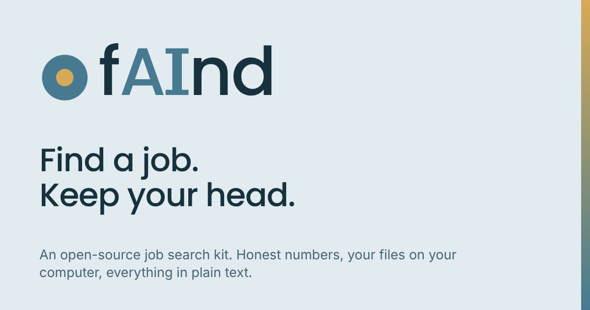

Brand
Find a job. Keep your head.
How fAInd is named, drawn and spoken, with the text and images ready to use on a profile, a site or a post.
The name
Say it "find". The AI is written into the word, quietly, and is not the headline.
Write it like this
fAInd, with a lower case f and n d, and a capital A and I.
The first time on a page, add what it is: "fAInd, the open job search kit".
Not like this
FAIND, Faind, faind, Find.ai
Capitals in the middle of a word are read letter by letter by some screen readers. That is why the wordmark carries the text "find" for assistive tech.
What stays as it is
The repository, the file names and the skills keep their technical names (jobops-kit, jobops-start and the others), so nothing you installed breaks.
Wordmark
A round mark and the name. The AI is set in the accent colour. The I has serifs on purpose: in a plain sans, a capital I looks like a lower case l and the name reads "fAlnd".
Space and size
Keep clear space around the wordmark equal to the height of the mark's inner dot, times three. The wordmark is never smaller than 96 px wide. The mark alone is never smaller than 16 px.
Do
Use the supplied files. Use the light version on light, the dark version on dark. Keep the gold only on dark or as the small dot.
Do not
Do not retype it in a font. Do not put the gold AI on a light background, it fails contrast. Do not stretch, outline, shadow or recolour it.
Colour
Six colours, taken from a palette of mist, teal, steel and gold. Gold is an accent. It is never used for small text on a light background.
- Mist#E1EBF0
Light surface - Teal#A9CDD4
Soft fills, dark mark - Steel#477A91
Mark, secondary - Deep steel#2E5C72
Buttons, links - Ink#17313E
Text - Gold#D6AA58
The AI, the dot
The product tokens, with live contrast checks, are on the design system page.
Voice
Dry wit and a stoic backbone. Say the number, what it means, and one line worth keeping. Never "don't worry".
Sounds like fAInd
A rejection is mail. Not a verdict.
26 applications is a small sample. Treat every comparison as a hint, not a result.
Does not
Don't worry, the right role is out there!
Supercharge your career with AI.
Plain words
Short sentences. No hype words. Numbers with their label. Write for someone who reads English as a second language.
Words to use
Copy and paste. Each one is true of the product today.
One line
fAInd is an open-source job search kit. It keeps an honest record, shows your real odds, and keeps your files on your computer.
Short description
fAInd helps you run a calm, honest job search with Claude. Everything is plain text, the dashboard runs in your browser, and your files stay yours.
Bio for LinkedIn, X and GitHub
Open-source job search kit for Claude. Honest numbers, plain-text context, your files on your computer. Built by a UX designer during a real search.
Repository description
fAInd: a calm, honest job search kit for Claude. Plain-text context, local dashboard, nothing uploaded by the dashboard.
Tagline
Find a job. Keep your head.
Downloads
The wordmark is drawn as outlines, so it looks the same everywhere without any font. Right click and save, or use the links.
- wordmark-light.svgWordmark with mark, for light backgrounds
- wordmark-dark.svgWordmark with mark, for dark backgrounds
- wordmark-onink.svgWordmark with mark, for deep night blue
- wordmark-text-light.svgWordmark without the mark, light
- wordmark-text-dark.svgWordmark without the mark, dark
- mark.svgThe mark on its own
- favicon.svgFavicon, follows the system theme
- avatar-512.pngProfile picture, 512 px
- og-card-1200x630.pngShare card for links, 1200 by 630

- linkedin-banner-1584x396.pngLinkedIn banner, 1584 by 396